<div>
    <h1>CSC 473 - Depth of Field</h3>
    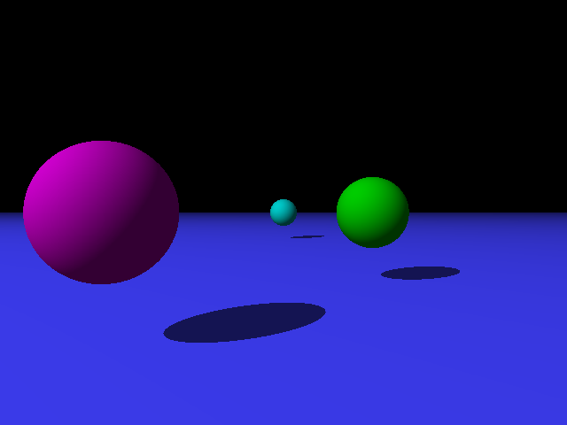
    <h2>About</h2>
    <div>This is an implementation of Depth of Field by Calvin Nguyen. 
         Depth of field is a feature that mimics a camera blur effect when one object is 
         in focus and the rest of the scene is out of focus. In this implementation, there 
         are two depth of field calculations. In one implementation, the offset points 
         calculated are done via stratified sampling in a square formation. 
         The other implementation calculates the offeset points via stratified sampling 
         in a circle formation. The secondary rays all then point to a focal point whose 
         depth can be defined by the user. At the very end, all the obtained color values 
         are averaged to get the final color.</div>
    <h2>Depth of Field Renders</h2>
    <div>Square sample renders are the left images and hemisphere sample render are the right images.</div>
    <h3>Focal Length: 5  Aperture Size: 64</h3>
    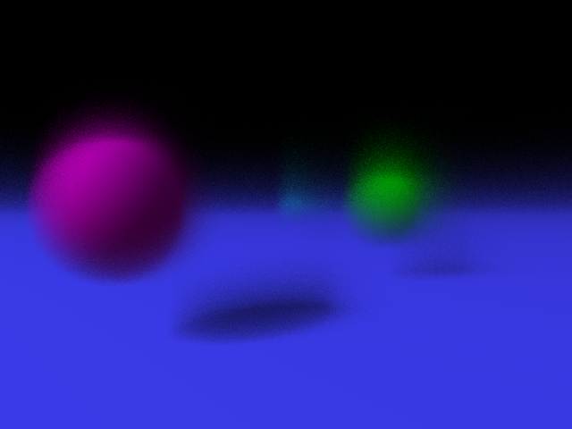  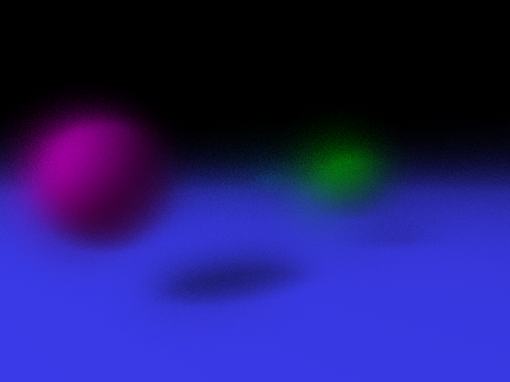
    <h3>Focal Length: 20  Aperture Size: 64</h3>
    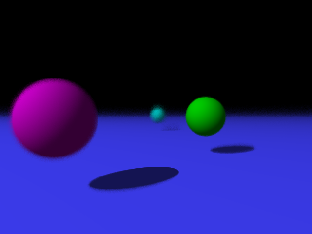  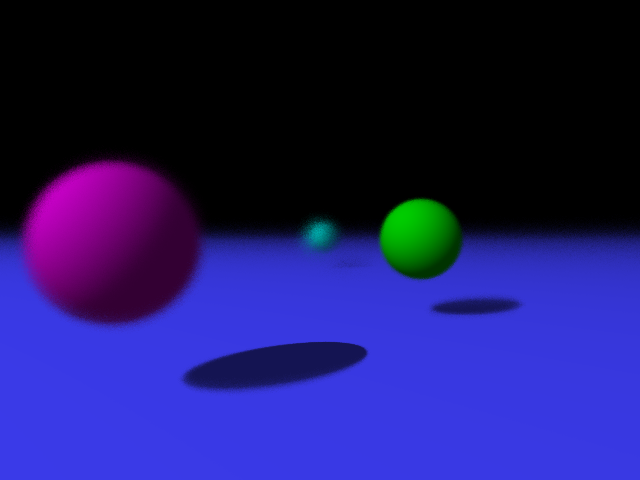
    <h3>Focal Length: 50  Aperture Size: 64</h3>
    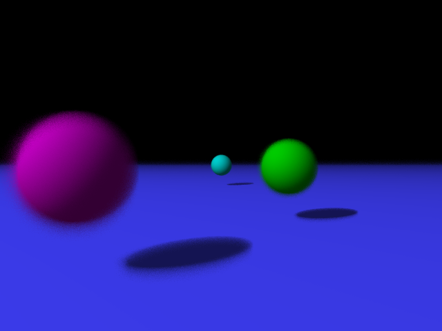  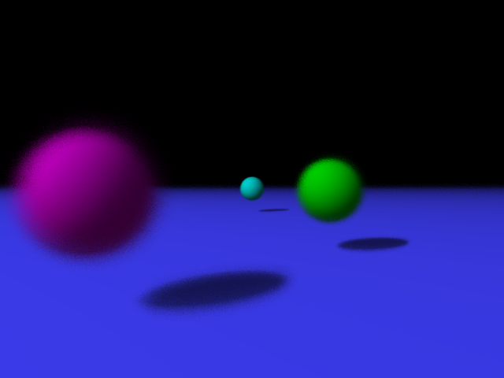
    <h3>Focal Length: 12  Aperture Size: 144</h3>
    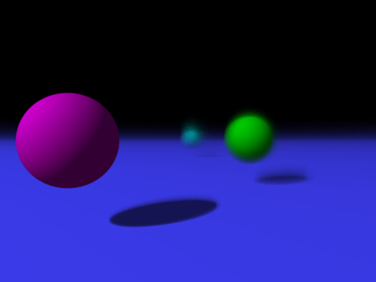  
    <h3>Focal Length: 12  Aperture Size: 144</h3>
    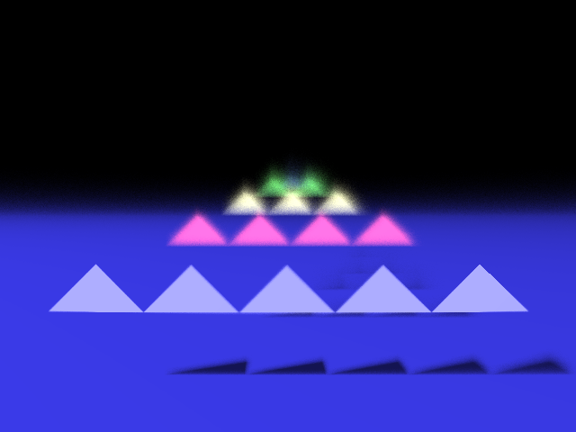  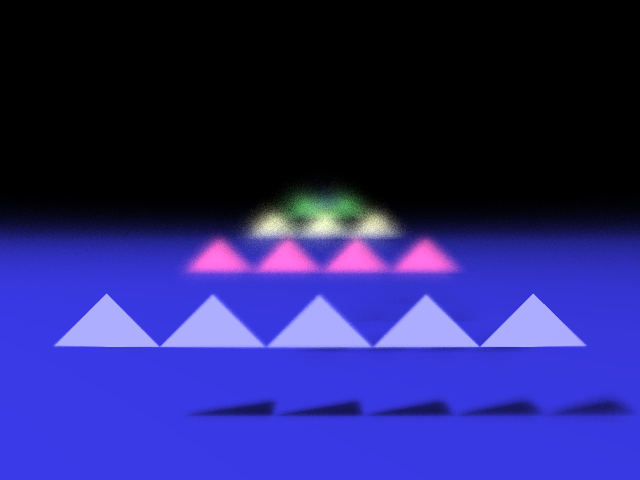
    <h3>Focal Length: 12  Aperture Size: 144</h3>
    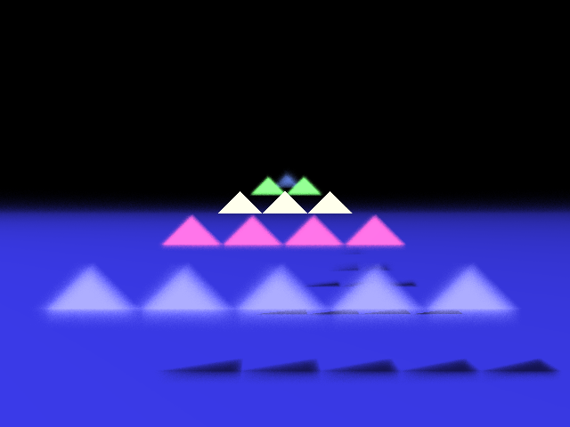  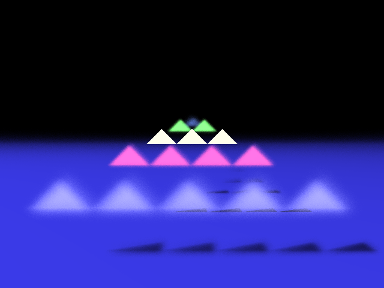
</div>